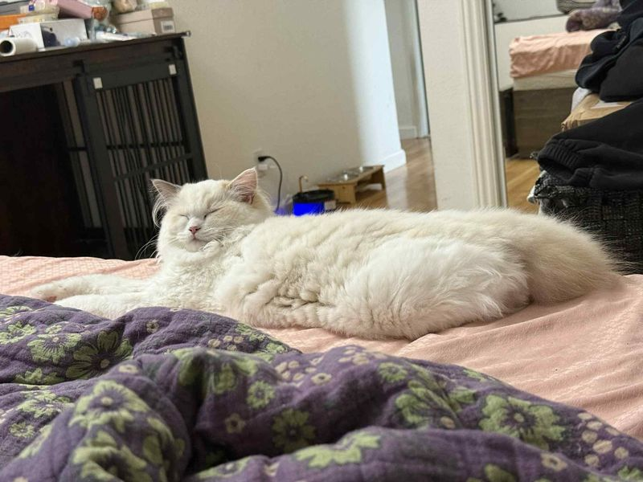
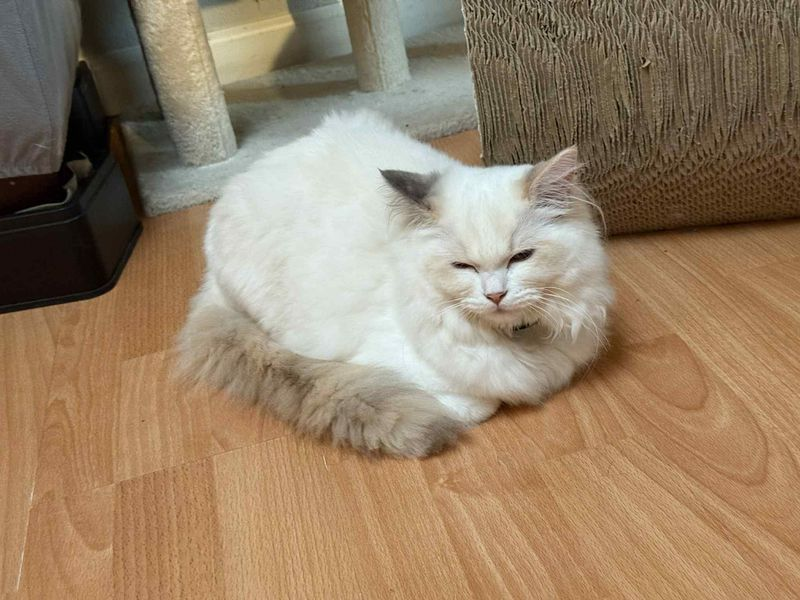

We are a Bay Area ragdoll cattery. Get your ragdoll kittens now!
Queen Magnolia: Blue Cream Bicolor
 Magnolia is a Blue Cream Bicolor, or a Blue Cream Tortie. It's one of the rarest colors of ragdolls. She is from the same breeder of Ivy, and also just as sweet as her. She would not leave me alone, and is always looking for pets. You may have guessed from the pictures above, Maggie is a derpy little fluffy ball. Interestly, Maggie doesn't really have an "awkward" phrase. She will join our breeding program in 2026. We believe her kittens will be sweet and beautiful!